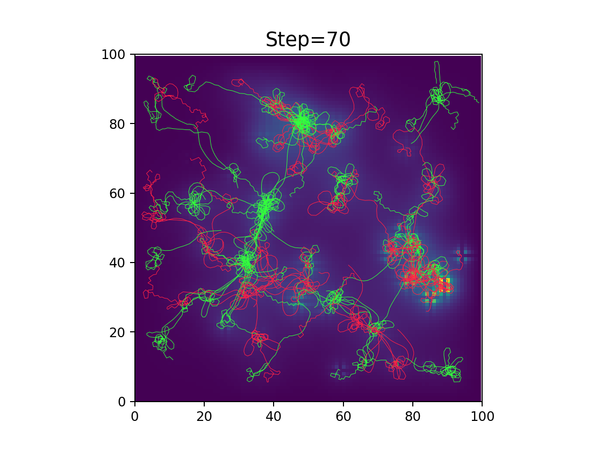
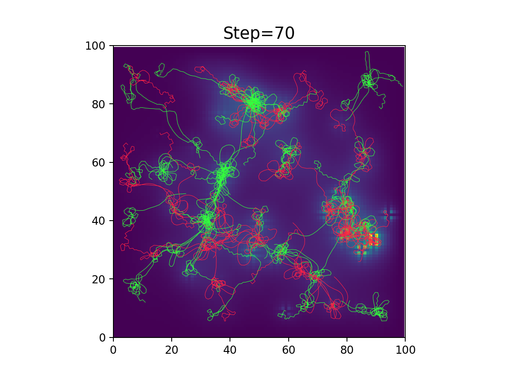
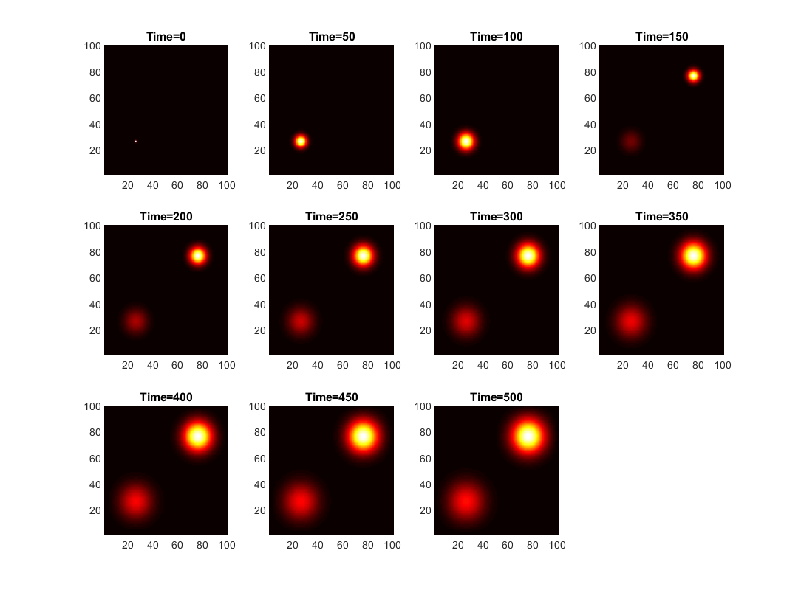
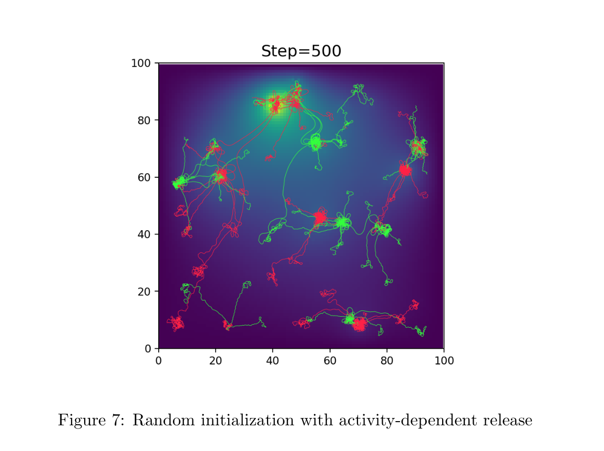
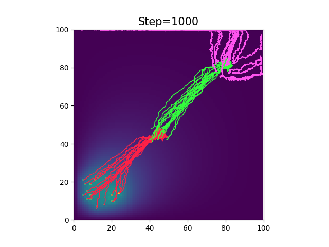
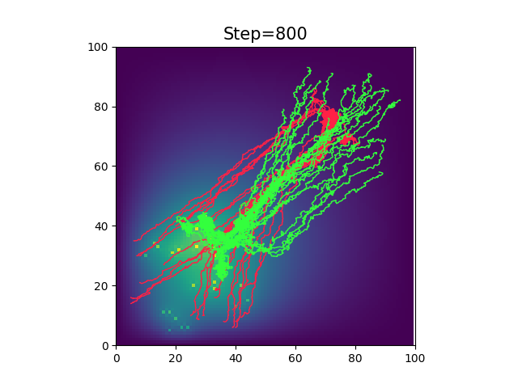
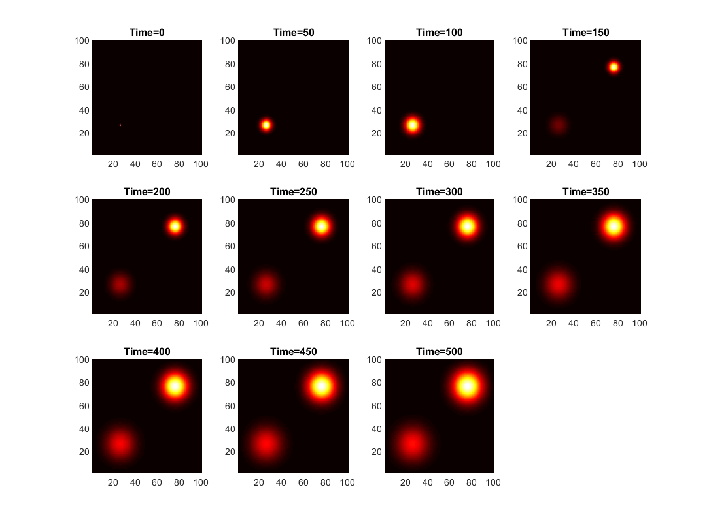
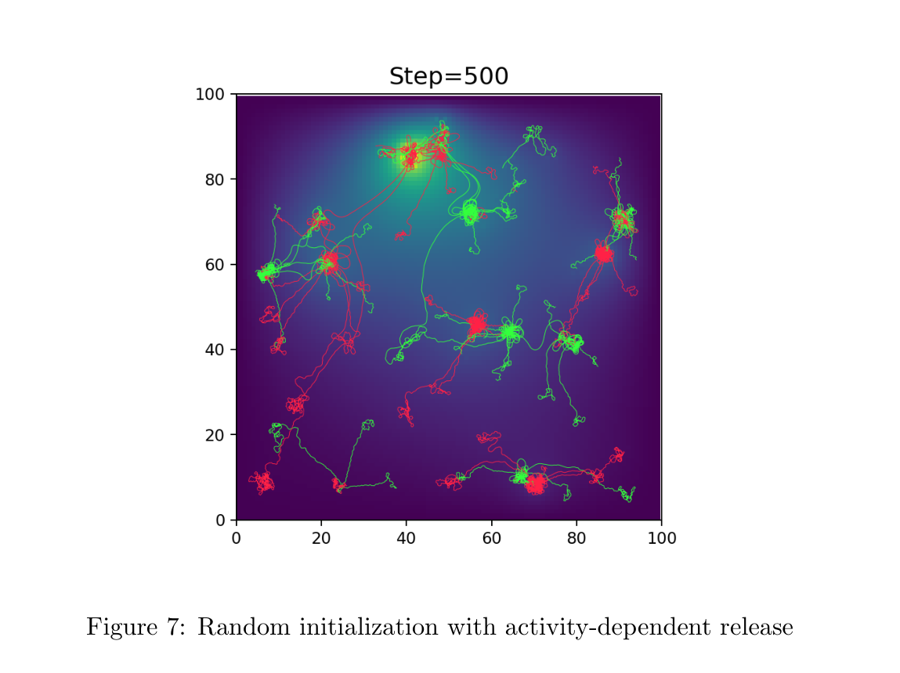
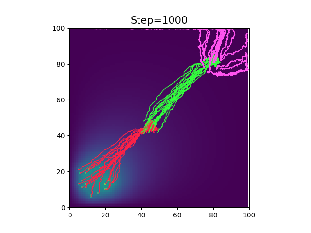
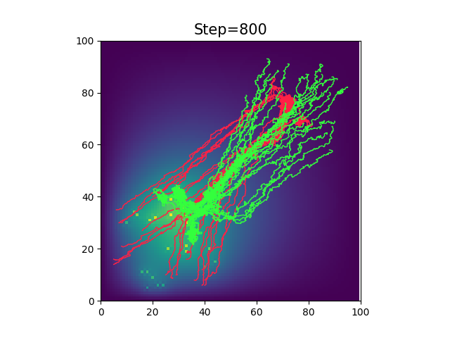

KNC Home
Axon Growth Simulation
In this work, we attempted to model the generation of neural connectomes. Our model consisted of 3 interdependent layers: the diffusion of neurite growth factors across a 2-D space, the growth of axons dependent on the gradients of various neurite growth factors, and a simplified model of neuron activity. Each of these three layers influenced the other layers. For example, the model of neuron activity took into account the incoming connections to a neuron, and the level of activity combined with the neuron type determined the output of various neurite growth factors. Our model is very versatile, and is capable of simulating an essentially unlimited number of types of neurons and growth factors, and their affinities can be fine tuned based on data from physical experiments. We hope to extend this model to incorporate a more detailed model of neuron activity, as well as a more detailed model of synaptogenesis.
 

 






